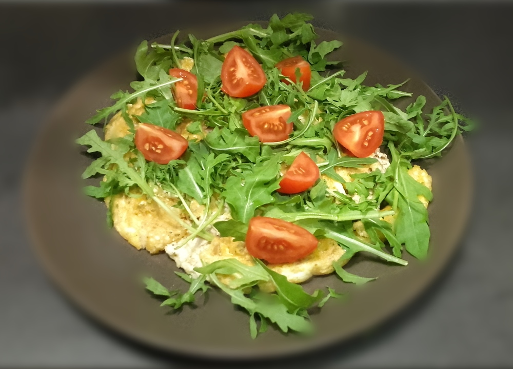
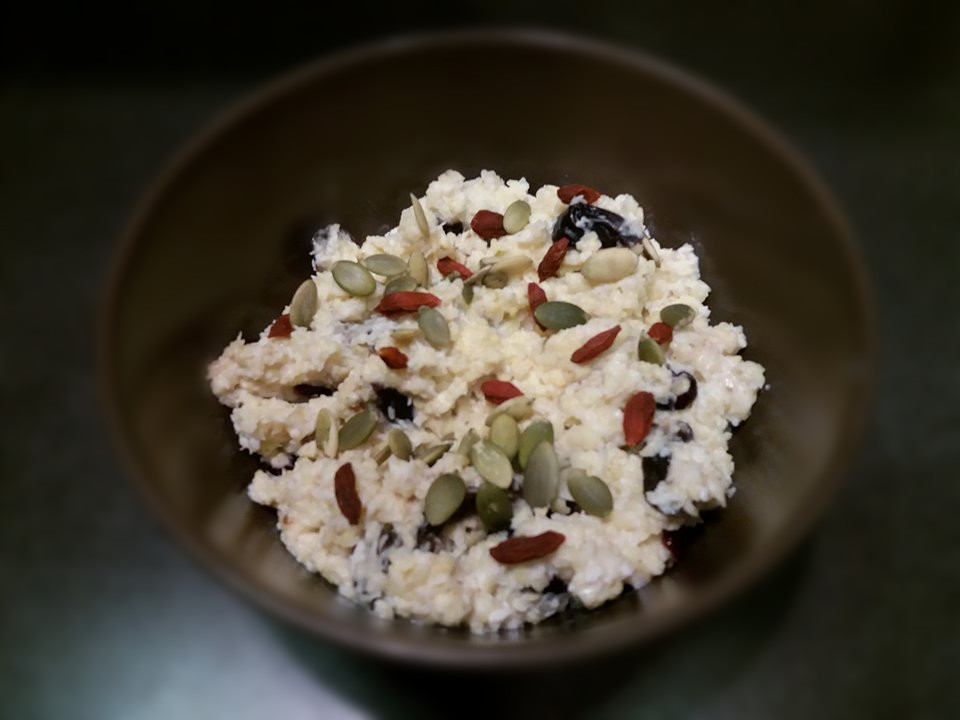
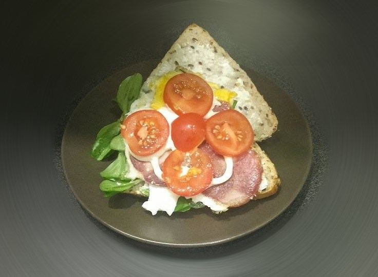
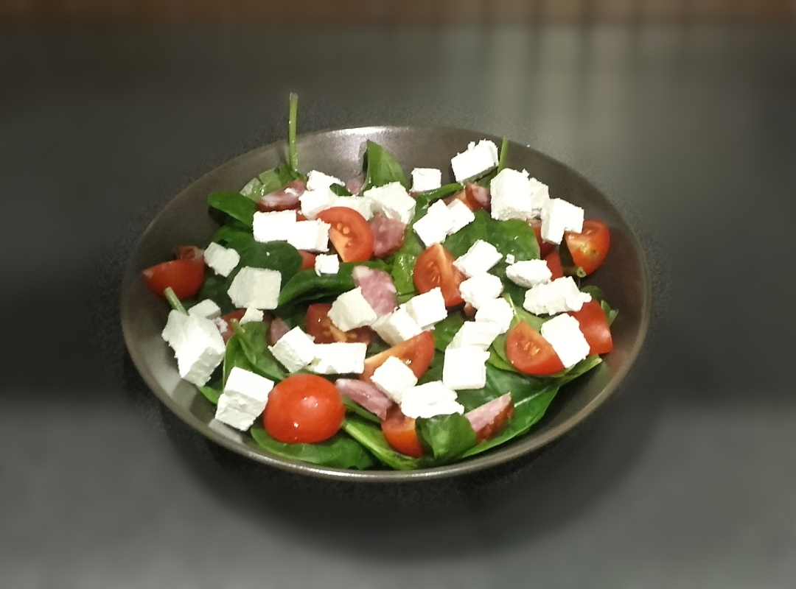

To blog, który zwiera cztery proste i szybkie w przygotowniu przepisy na smaczne śniadania.
Omlet z tuńczykiem

Lista Składników:
2 jajka;
łyżka płatków owsianych;
2 łyżki tyńczyka z puszki;
łyżka masła lub oliwy;
garść ruccoli;
kilka pomidorków koktajlowych;
Sposób przygotowania:
Odzielamy żółtka od białek, białka miksujemy na sztywną pianę,
następnie dodajemy żółtko i delikatnie mieszamy.
Po wymieszaniu jaj dodajemy płatki i tuńczyka następnie mieszamy na jednolitą masę;
Na rozgrzaną patelnię wylewamy masę i smażymy pod przykryciem z obydwu stron;
Usmażony omlet wykładamy na talerz posypujemy ruccolą i pokrojonymi w ćwiarki pomidorkami;
Jaglanka

Lista Składników:
2 czubate łyżki płatków jaglanych;
3/4 szklanki mleka lub wody;
łyżeczka suszonej żurawiny;
łyżka wiórków kokosowych;
4 śliwki suszone;
Sposób przygotowania:
Płatki gotujemy w mleku.
Po chwili dorzucamy wiórki kokosowe, żurawinę i pokrojone w plasterki śliwki;
Całość gotujemy, aż płatki i owoce zmiękną odstawiamy do ostygnięcia i jemy :);
Jajko sadzone w pełnoziarnistej bułce

Lista Składników:
pełnoziarnista bułka;
jedno duże jajo (lub dwa mniejsze);
plasterek szynki;
łyżeczka masła;
sałata roszponka;
kilka plasterków pomidora;
sól, pieprz, obcjonalnie majonez;
Sposób przygotowania:
Na patelni podsmażamy plasterek szynki z obydwu stron, następnie wbijamy na nią jajko,
posypujemy solą i pieprzem (w zależności jak kto lubi smażymy z jednej lub z obydwu stron).
Bułkę smarujemy masłem, następnie na oddzielnej patelni (albo w piekarniku) podsmażamy
ją.
Na chrupiącą bułkę kładziemy sałatę i pomidora oraz usmażone jajko.
Bułkę zamykamy i mamy przepyszną kanapkę na ciepło.
Sałatka ze szpinakiem i serem feta

Lista Składników:
2 garści szpinaku baby;
kilka plasterków podsuszanej kiełbasy;
1/3 opakowania sera feta;
5 pomidorków koktajlowych;
łyżka oliwy.
Sposób przygotowania:
Umyty szpinak wrzucamy do miski.
Kiełbaskę kroimy w plasterki, ser feta w kostkę, a pomidorki na pół
wszystko to wrzucamy do szpinaku.
Na tak przygotowaną sałatkę wylewamy łyżkę oliwy z oliwek.